Product Tour — Zoho Sprints
Designing a guided walkthrough to help users navigate a feature-dense project management tool
Key Takeaways
- Explored three fundamentally different approaches before landing on a split-panel card that balances context with non-intrusiveness
- The winning design pairs explanatory text with a screenshot preview — giving users both the "what" and the "where"
- Five iterations refined the navigation pattern from text buttons to icon-based arrows with dot pagination
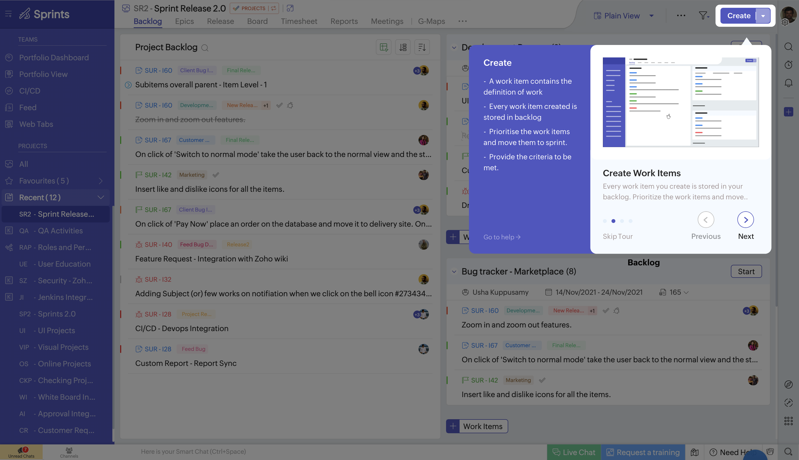
The Problem
Zoho Sprints is a feature-dense project management tool. New users land on the Backlog page and see work items, sprint panels, filters, creation buttons, and action menus — all at once. There was no guided way to learn what each section does.
Support tickets and user feedback consistently pointed to navigation confusion. Users didn't know where to start, what the "Create" button did in context, or how to filter their view. The product needed a way to orient users without pulling them out of the interface.
Option 1 — Full-Screen Overlay
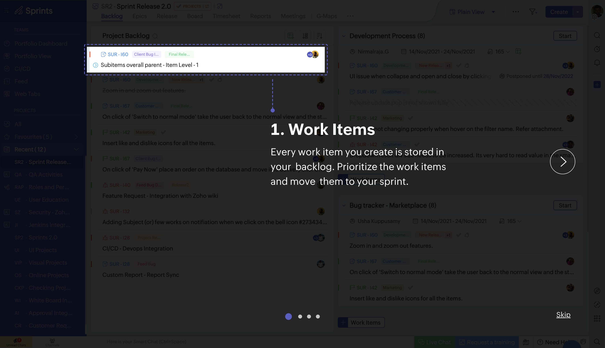
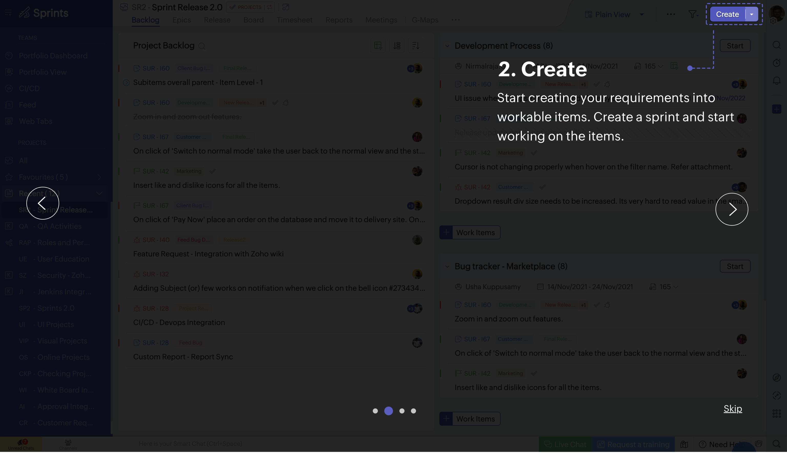
Large bold text overlaid directly on the interface with a circular spotlight highlighting the target element. Carousel navigation with dots, Skip, and Next/Prev buttons.
Pros: High visual impact. Impossible to miss. Clear spotlight draws the eye exactly where it needs to go.
Cons: Extremely intrusive — covers the entire page. Users can't interact with the product during the tour. The overlay text competes with the actual UI underneath, making it hard to connect the explanation to the element being explained.
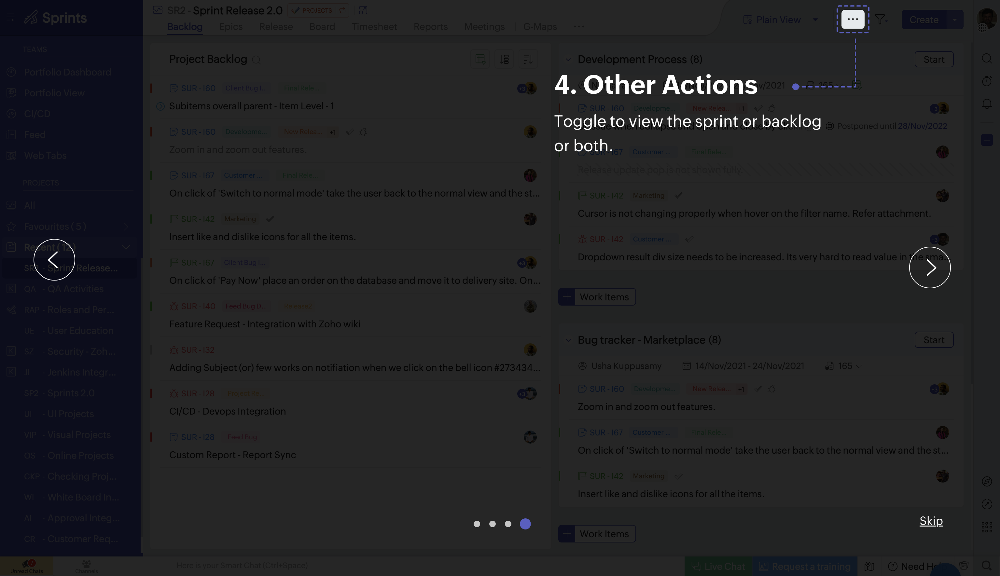
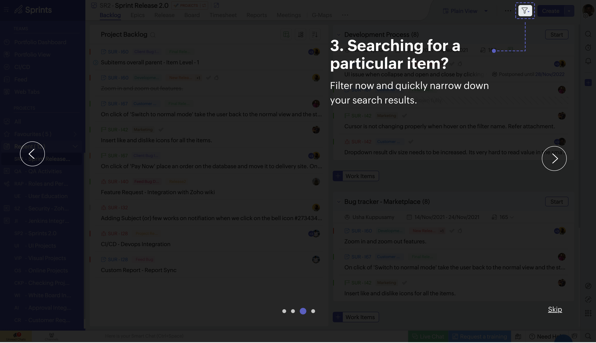
Option 2 — Tooltip Popover
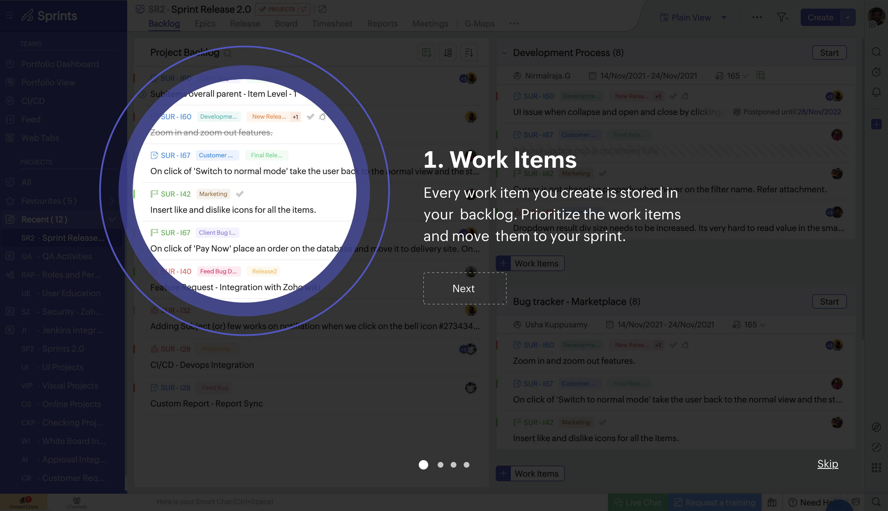
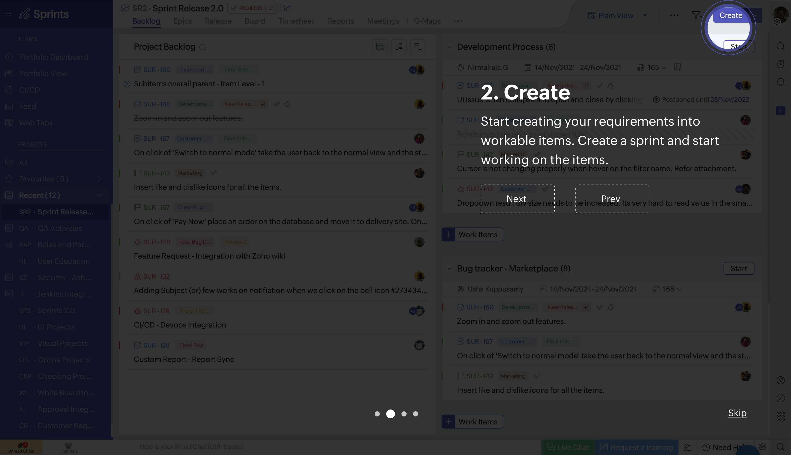
A smaller card anchored near the highlighted UI element. Each step shows a wireframe screenshot preview, title, description, and a step counter (e.g. "1 of 4"). Previous/Next navigation buttons.
Pros: Less intrusive than the full overlay. Users can still see most of the interface. The screenshot preview gives context.
Cons: The card floats without a strong visual connection to the element it's explaining. The wireframe preview is small and abstract. With 4 steps, the card needs to jump to different positions on screen — which can feel disorienting.
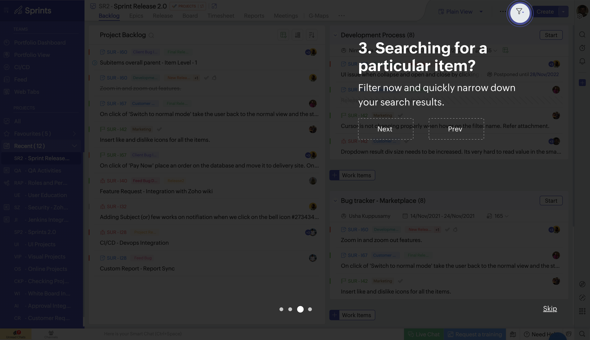
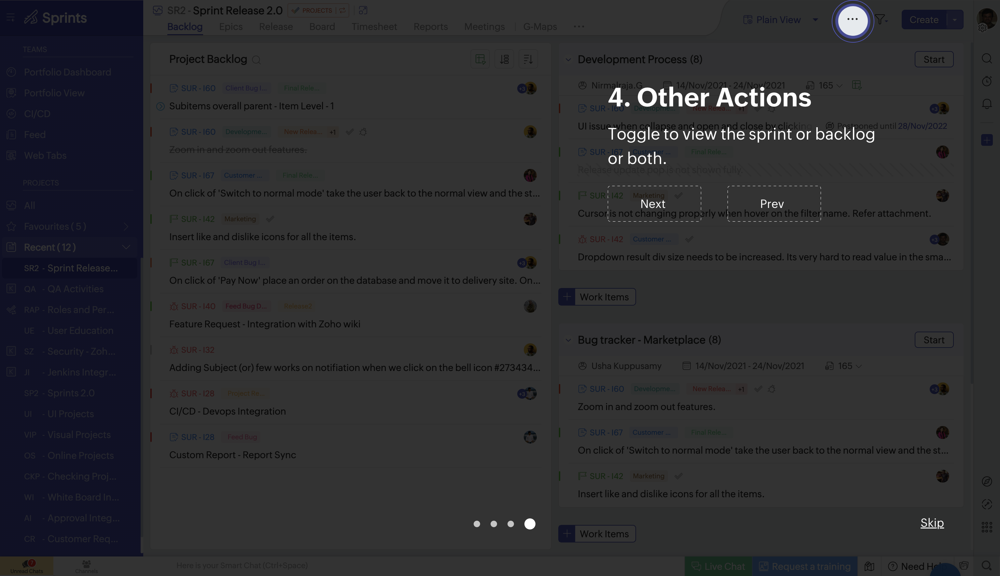
Option 3 — Split-Panel Card (Chosen)
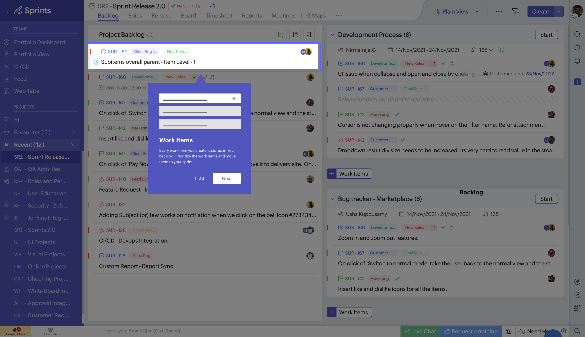
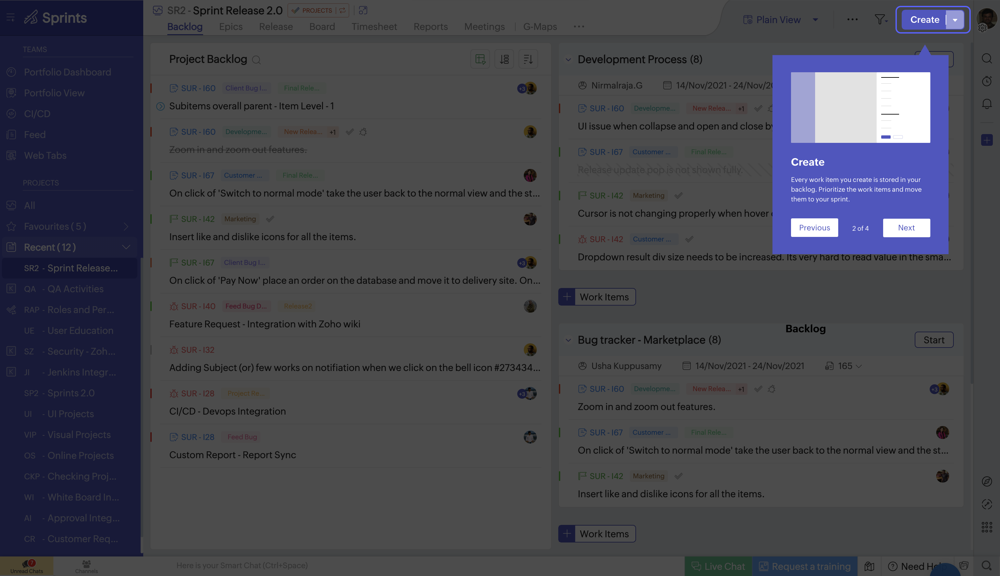
A two-column card: bullet-point explanation on the left, screenshot preview on the right. Anchored near the relevant UI element with a clear pointer. Includes a "Go to help" link for users who want to learn more, plus Skip Tour and navigation controls.
Why this won:
- Best balance of context and space. The split layout gives room for both a text explanation and a visual reference without overwhelming the screen.
- Text + visual pairing. Users see what the feature does (bullet points) and where it lives (screenshot) simultaneously. No guessing.
- Non-intrusive but present. The card doesn't cover the whole page, but it's prominent enough that users won't accidentally dismiss it.
- "Go to help" escape hatch. Power users who want deeper documentation can jump straight to help docs without finishing the tour.
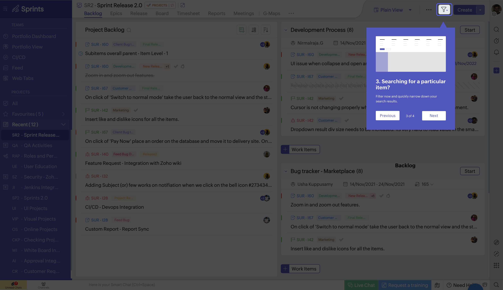
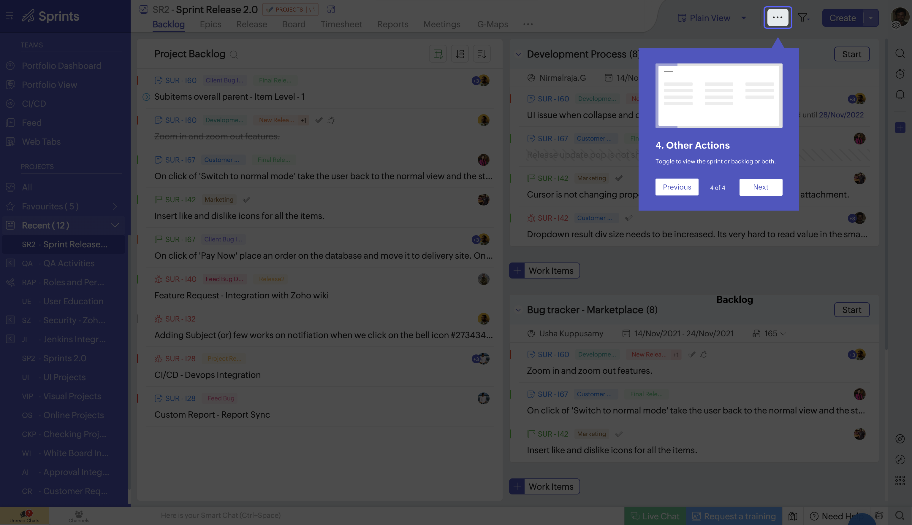
Refining Option 3 — 5 Iterations
Once we committed to the split-panel direction, I iterated on layout, navigation, and typography to find the right balance.
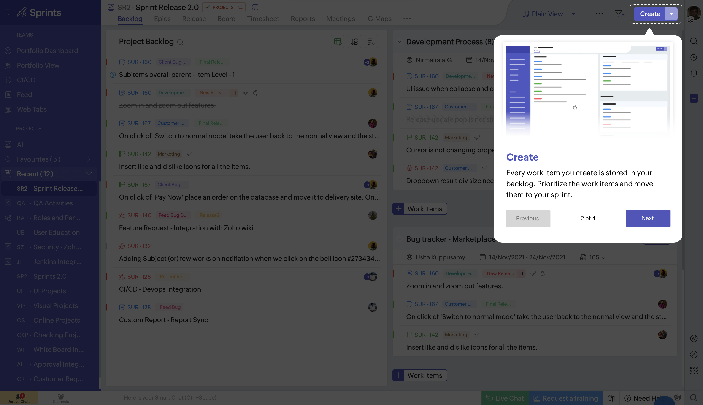
Iteration 1 — Base split layout with Previous/Next text buttons and a step counter ("1 of 2"). Functional but the text buttons felt heavy, and the counter didn't scale well visually.
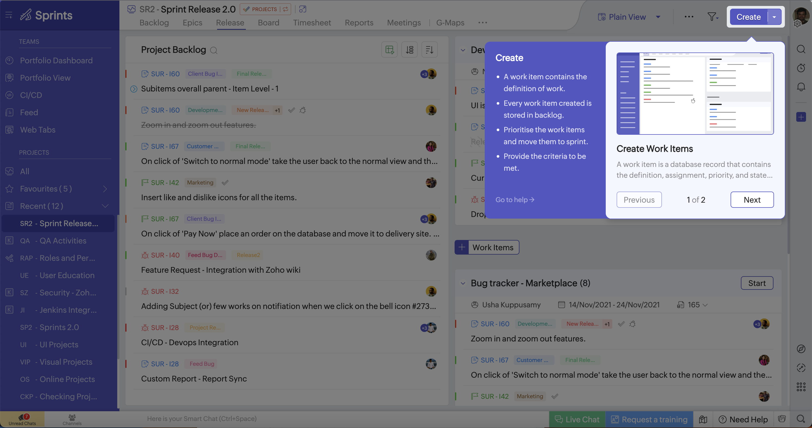
Iteration 2 — Added "Skip Tour" as a clear exit option. Refined typography and spacing within the card. The navigation still used text buttons, which felt cluttered alongside Skip.
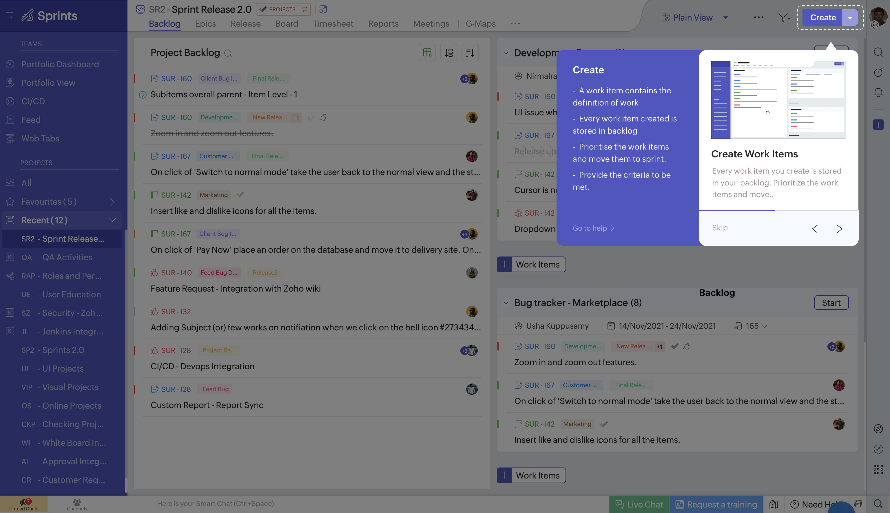
Iteration 3 — Replaced text buttons with arrow icons. Added dot pagination to show progress. This reduced visual noise and made the navigation feel lighter.
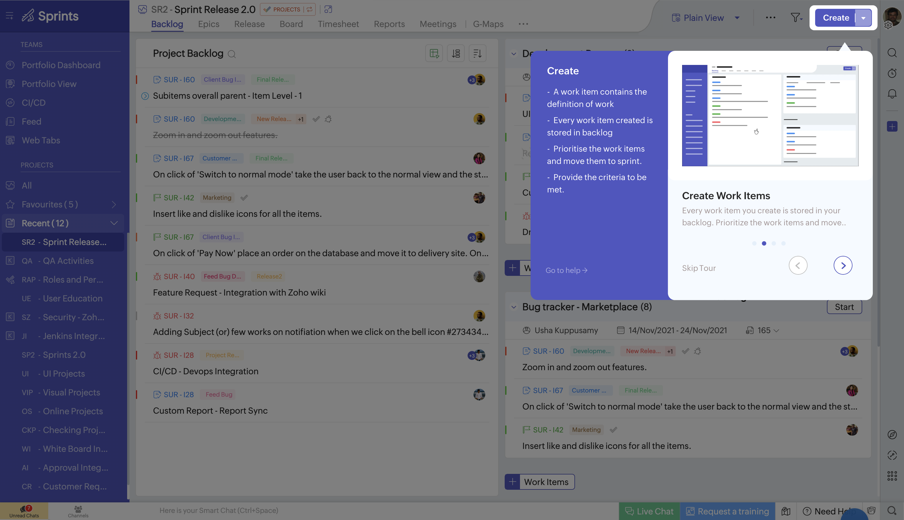
Iteration 4 — Spacing and type refinements. Tightened the card padding, adjusted line heights, and balanced the two columns so text and screenshot feel equally weighted.
Iteration 5 (Selected) — Final polish. Clean card with bullet points, screenshot preview, "Go to help" link, dot pagination, and arrow navigation. This version shipped to production.
The 4-Step Tour
The tour covers the four most critical actions a new user needs to understand on the Backlog page:
- Work Items — Every work item you create is stored in your backlog. Prioritize them and move them to your sprint.
- Create — Start creating your requirements into workable items. Create a sprint and start working on the items.
- Search & Filter — Filter now and quickly narrow down your search results.
- Other Actions — Toggle to view the sprint or backlog or both.
Each step highlights the relevant UI element, explains what it does, and shows a screenshot preview. Users can skip at any time or follow the "Go to help" link for deeper documentation.
What I Took Away
Explore wide, then go deep. Three options gave me and the team a real choice — not just "this or a slightly different this." Option 1 was too aggressive, Option 2 too detached, Option 3 hit the sweet spot. Without exploring the extremes, we wouldn't have had confidence in the middle ground.
Navigation patterns matter more than you think. The biggest gains in the iteration phase came from rethinking the nav controls — swapping text buttons for icons, adding dot pagination, and introducing Skip Tour. Small changes, but they transformed how the tour felt to use.
Show, don't just tell. The screenshot preview in the split panel was the key insight. Text-only explanations force users to mentally map words to UI. Pairing text with a visual reference eliminates that cognitive load entirely.